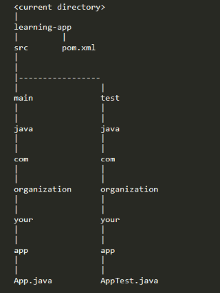

Maven
Intro
As much as I enjoy Java, there are some aspects of plain out-of-the-box Java that I've always found confusing and frustrating. Creating a JAR, managing packages and dependencies, and remembering to set the class path quickly become unwieldy when dealing with anything more than a couple of source files. (And even then I almost never remember to implement those details appropriately enough to successfully compile and run on the first attempt.) Happily, we have Maven. Maven is a build tool developed and maintained by Apache, who describe it as a plugin execution framework. This means that while it's been designed to take care of all those pesky administrative details that can drive you up a wall, it's also highly extensible, so it's capable of much more than basic build tasks. Its integration with JUnit via the core surefire plugin (included by default) is especially welcome, allowing seamless incorporation of unit testing into the build process.
Installing Maven
Go here. If you're on windows, download the Binary zip archive, and if you're on Linux download the Binary tar.gz archive. Then follow the installation instructions, which amount to:
- Extract the archive to a directory of your choosing.
- Modify your PATH environment variable to include <your>/<path>/<to>/apache-maven-3.6.3/bin
Starting a New Project
Note: The first time you do this it might take a second; there's a whole bunch of stuff Maven needs to download (archetypes, dependencies, etc.) that weren't included in the initial download and installation process.
On The Command Line
Here's the command:
mvn archetype:generate -DgroupId='com.organization.your.app'
-DartifactId=learning-app
-DarchetypeArtifactId=maven-archetype-quickstart
-DarchetypeVersion='1.4'
-DinteractiveMode=false
Important: If you're doing this on Powershell, make sure to include the quotation marks around any value that contains a dot (.). The command will not complete without them.
In Visual Studio Code
Proceed through the following. VSC will prompt you the whole way. See below to understand the values it asks for.
- On the left hand menu bar, there's a submenu titled JAVA PROJECTS. Expand and click the button labeled "Create new Java project." At the top of the screen a selection of project types will be displayed. Select "Maven create from archetype," and then choose the archetype appropriate for your project. Maven will then prompt you in the command line for some information that it needs to create your unique project:
- Define value for property 'groupId':
- Define value for property 'artifactId':
- Define value for property 'version' 1.0-SNAPSHOT:
- Define value for property 'package' <groupId>:
What All That Means
Whichever option you choose, you should understand the options involved:
- groupId (-DgroupId): Per Maven, the groupId is used to uniquely identify a project, and should follow Java's naming conventions for packages. This is the public facing name of the project that will be used to import it elsewhere. Let's select something generic: 'com.organization.your.app'. This structure allows the creation of subgroups as well, so your project can be further divided as you need.
- artifactId (-DartifactId): This is the name of your jar file. It's the simple name of your project. Version is not included in this part. It comes next
- 'version' 1.0-SNAPSHOT: (-Dversion): The current version of your project.
- 'package' <groupId>: If left blank, this will just populate with your groupId. It will establish the directory structure for your project. It doesn't have to be the same as the groupId if you don't want it to be, but it makes it easier.
- -DarchetypeArtifactId:This is the archetype you're generating. There are a number of different archetypes suited for different purposes. For a small, easy project, archetype-quickstart will do
- -DarchetypeVersion: The version of the particular archetype you're generating. Obviously it will vary. For quickstart, it's 1.4
Maven has now created a directory structure for your project, as specified by the parameters you supplied to the above arguments. You'll see it's parent folder, which bears the name of your artifactId, if you ls in your current directory. This is what it looks like:
There are a couple thing to notice here. First, the parent directory of your new project contains a file named "pom.xml". pom stands for Project Object Model. It is the fundamental configuration file for Maven projects, and its existence is what makes a Maven project a Maven project. It contains the information that you entered above, and it contains information about any and all dependencies for your project.
The second thing to notice is the src folder that Maven created. Or more specifically, notice the way it forks. Maven creates two branches, one for your projects source files, and one for unit testing. At the end of both of those trees are sample programs that can be altered and adjusted to meet the needs of your project.